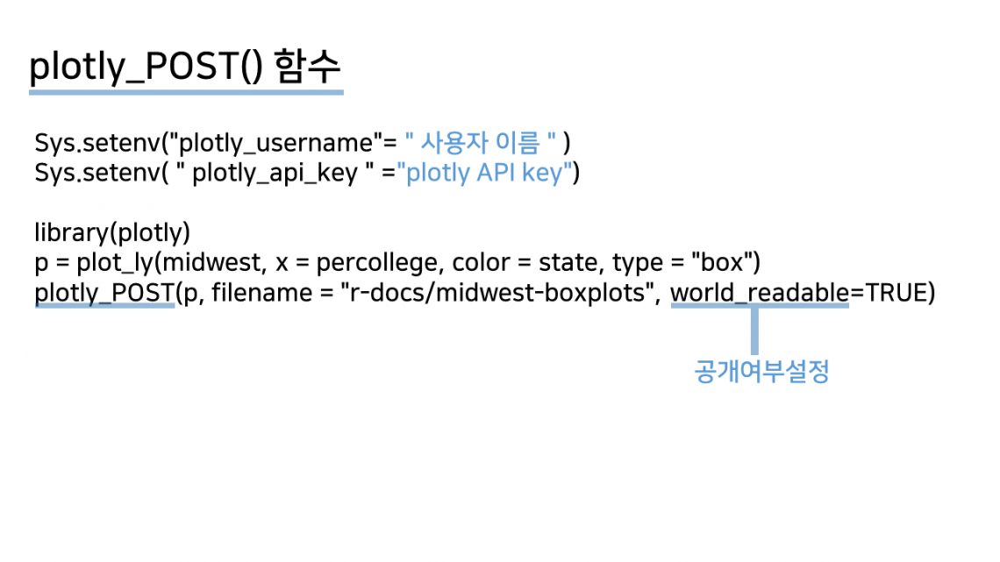
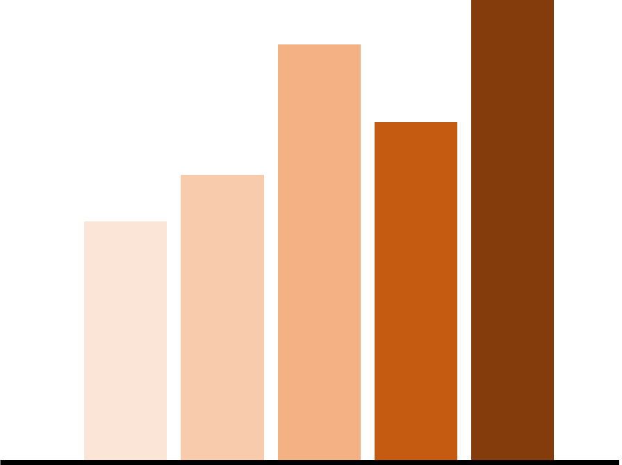

[디블로터]R에서 만든 반응형 차트를 웹으로, ‘플로틀리’
[디블로터]시간 처리를 편리하게…‘루브리데이트’ 패키지
[디블로터]어느 인포그래픽이 더 적절할까?
R의 큰 강점 중 하나는 시각화입니다. ‘지지플롯2’를 비롯한 시각화 패키지의 활용이 쉽고, 결과물도 깔끔합니다. R의 ‘플로틀리'(Plotly) 패키지는 플로틀리 서비스의 코어 부분인 ‘플로틀리JS’가 오픈소스화 된 것인데요. 반응형 웹을 지원하기 때문에 모바일에서도 보기 좋은 시각화 작업이 가능합니다. 플로틀리는 파이썬, 매트랩 등 여러 언어를 지원하고 있고, R에서는 지지플롯2 패키지와 호환성이 높습니다. 이미 디블로터 11편에서 플로틀리 패키지의 간단한 활용법을 다룬 바 있습니다. 그려둔 그래프에 ‘ggplotly()’ 함수를 덮어씌워 기존 차트를 손쉽게 인터랙티브 차트로 바꾸는 방법입니다.
 플로틀리 사이트에서 방금 만든 차트를 확인할 수 있습니다. 사이트에서 차트를 수정할 수도 있고, 외부 사이트에 임베드할 수도 있습니다. 물론 이와 유사한 서비스는 많이 있지만, R를 쓴다면 편리하게 활용할 수 있다는 장점이 있습니다.
데이터를 처리할 때 의외로 짜증나는 항목은 시간입니다. 날짜와 시간은 단순한 숫자가 아닙니다. 시간을 단순한 숫자로 인식하면 계산이 나오지 안 됩니다. 시간의 연산을 위해서는 시간을 ‘Date’나 ‘DateTime’이라는 객체 형식으로 저장해야 합니다.
시간은 보통 체계적으로 적혀있기는 합니다. 다만 꼭 체계적이라고 보기도 어렵습니다. 사람이 보기엔 괜찮아도 컴퓨터가 보기엔 적절하지 않을 수 있다는 의미입니다. 때문에 컴퓨터가 날짜로 인식하는 패턴에 맞추기 위해서 한 번 더 손이 가곤 합니다. 컴퓨터가 날짜로 인식하는 경우는 보통 ‘2016-04-03’같은 경우입니다. ‘2016년 04월 3일’, ’16. 4. 3′ 등의 형식일 때는 컴퓨터가 이해할 수 있는 형태로 변환해주는 과정이 필요합니다.
이번 주 디블로터 시간에는 인포그래픽에 대해 공부했습니다. 데이터과학이 너무 어렵다 보니 학습 의욕이 꺾이는 경우가 종종 생기더라고요. 하루를 써서 공부하는 만큼, 시간을 분배해 다양하게 배우면서 흥미를 유지하는 게 좋을거라는 판단이 들었습니다. 2주를 인포그래픽 문법에 할당했는데요. 책을 공부하다 보니 아는 것보다는 익히는 게 더 중요한 내용이라 정작 공부하는 데는 하루가 채 걸리지 않았습니다.
교재는 ‘인사이트’에서 나온 ‘월스트리트저널 인포그래픽 가이드’입니다. 저자인 도나 M. 윙은 인포그래픽 분야에서만 20년 이상 경험을 쌓은 베테랑입니다. <뉴욕타임스>, <월스트리트저널> 등 유수 언론사를 거쳤습니다. 이 책은 간결하고 명확하게 인포그래픽을 그릴 때 필요한 내용을 다루고 있습니다. 공부한 내용을 바탕으로 아홉 가지 사례를 꼽아봤습니다. 책에는 훨씬 풍성하고 알찬 내용이 담겨있으니, 추가로 더 알고 싶다면 책을 보셔도 좋습니다.